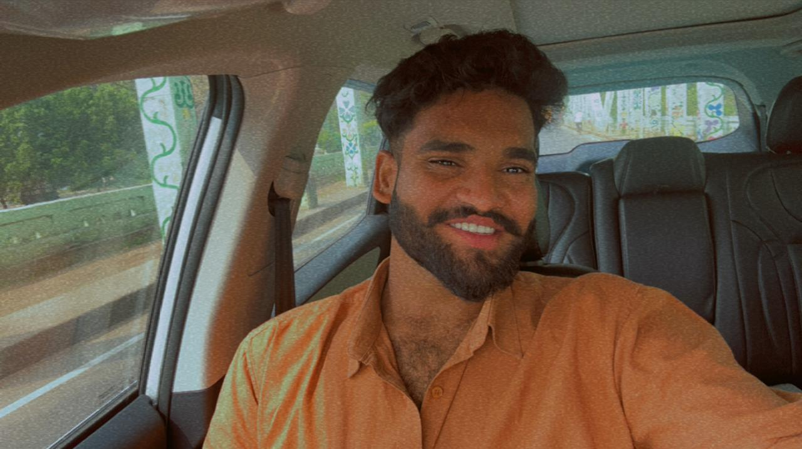

| Home | Gallery | Portfolio | Contact |
|  |
SRILOK |
Confident and motivated B.Tech Computer Science student at SRM University, AP. Eager to learn and develop new technical skills, with a strong interest in problem-solving and technology. A dependable individual with excellent communication and analytical abilities, ready to contribute to innovative projects and work hard in a professional environment.
B.Tech in Computer Science Engineering
DSA, C, C++, Object-Oriented Programming, Algorithms
Problem-Solving, Logical Thinking, Time Management, Team Collaboration